|
||||||||||||||||||||||||||||||||||||||||||||||||||||||||||||||||||||||||||||||||||||||||||||||||||||||||||||||||||||||||||||||||||||||||||
| bin | audible | body | comment | ||
| b | 16.4 | 526 | 1052 | top of head | spirit, liberation, transcendence |
| h | 15.4 | 492 | 984 | cortex | intelligence |
| g | 13.8 | 440 | 880 | frontal lobes | the seventh sense, final decision |
| f | 12.3 | 393 | 787 | eyes | visualization |
| e | 10.7 | 342 | 685 | ears | hearing, formal concepts |
| d | 10.3 | 329 | 658 | nasal passages | breathing, taste |
| c | 9.19 | 294 | 588 | upper lip | emotions, conflict resolution |
| b | 8.22 | 263 | 526 | mouth | speech, creativity |
| h | 7.69 | 246 | 492 | shoulders | strength of the arms, expansion, teaching |
| g | 6.88 | 220 | 440 | collarbones | vitality, overall balance, stability |
| f | 6.15 | 197 | 393 | heart | love, warmth |
| e | 5.35 | 171 | 342 | lungs | oxygen, heat |
| d | 5.14 | 165 | 329 | stomach | emotional acceptance |
| c | 4.60 | 147 | 294 | spleen, blood | emotional impulse |
| b | 4.11 | 132 | 263 | kidneys | strength |
| h | 3.84 | 123 | 246 | liver, pancreas | |
| g | 3.44 | 110 | 220 | ovaries | vitality, life at every level |
| f | 3.07 | 98.4 | 197 | hara | 3cm or 1.5 in. below navel, balance of pelvis |
| e | 2.67 | 85.5 | 171 | intestines | |
| d | 2.57 | 82.3 | 165 | bladder | |
| c | 2.30 | 73.6 | 147 | genitals | |
| b | 2.06 | 65.8 | 132 | coccyx | |
based on concert pitch A=440, and the 31st root of 2 = 1.0226114356
The two columns of audible frequencies are an octave apart, either can be used to intentionally guide the attention and sound to the corresponding parts of the body. Someone with a lower voice may find the lower octave more convenient and likewise someone with a higher voice may find the higher octave more compatible.
References:
Les Plans d'Expression, Marie-Louise
Aucher, Paris, Mame,
Revelatio Secretorum Artis, Ivo Salzinger, in Beati Raimundi Lulli Opera Omnia, Minerva, Mainz, 1975

Back to the beginning of this article
Cyclus Harmonicus, or universal harmonic cycle
To the Brainwave Generator site
To the Book of Seven Planets
Back to site contents